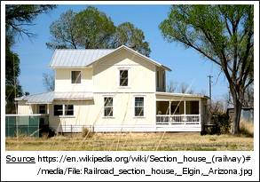

Chapitre 1
[[ Note du Traducteur : Thomas Stevens est le premier cycliste à avoir fait le tour du monde ; par la même occasion il est le premier cycliste à avoir traversé les Etats-Unis d'océan à océan ; les 4 premiers chapitres relatent sa traversée des Etats-Unis. ]]
Dans la Sierra Nevada
Les beautés de la nature sont répandues par une main plus prodigue à travers les régions situées entre le sommet des montagnes de la Sierra Nevada, et les côtes où les vagues s'ébattent et roulent sur les sables aurifères du Pacifique au Golden Gate Park, que dans un voyage de la même distance en n'importe quel autre endroit du monde.
Tel, du moins, est le verdict de beaucoup qui ont eu la bonne fortune de traverser cette étendue favorisée du territoire. Rien sauf les limites de la vue de l'homme ne l'empêche de se tenir au sommet des montagnes et d'embrasser du regard toute la gloire du panorama qui s'étend sur plus de deux cents miles à l'ouest, terminant sur les eaux étincelantes de l'Océan Pacifique. Le ferait-il, qu'il verrait sur les premiers soixante-quinze ou quatre-vingts miles, une vaste mer agitée de contreforts, vêtus de forêts de pins sombres et de chênes lumineux et toujours verts, et plus bas, de denses parcelles de maquis à la floraison blanche, paraissant à cette distance enchantées comme d'irréguliers bancs de neige. Puis la vallée de la Rivière Sacramento, avec ses plaines unies, à la terre sombre et riche, ses champs sans égal de blé mûrissant traversés ici-et-là de torrents qui, émergeant des sombres profondeurs des contreforts, tracent leurs chemins serpentant comme d'étincelants fils d'argent à travers la plaine fertile et rejoignent la Sacramento, qui les reçoit pour ne faire plus qu'un en son sein de matrone et court avec eux jusqu'à la mer.
Villes et villages, aux églises aux flèches blanches, éparpillés par monts et par vaux, qu'on dirait semés comme des graines par la main géante d'un formidable paysan, paraissent douillettement blottis au milieu des bosquets à l'ombre mouvante et aux arbres semi-tropicaux. Au-delà de tout celà, la côte plus basse où vers San Francisco, Mount Diablo et Mount Tamalpais - sévères sentinelles du Golden Gate - dressent leurs têtes hirsutes vers le ciel, semblent regarder en bas avec un air condescendant vers les collines moins prétentieuses qui bordent la côte, et réfléchissent leurs ombres dans l'eau bleue de San Francisco Bay. Sur les pentes de ces douces collines, de l'herbe nutritive pousse, sur laquelle paissent paisiblement les vaches qui alimentent San Francisco en lait et en beurre.
Plusieurs tentatives ont été faites de temps en temps, par d'ambitieux cyclistes, de pédaler à travers l'Amérique d'océan à océan ; mais "Le Tour du Monde !"
"Le projet irréalisable d'un rêveur," était le verdict le plus charitable qu'on pût raisonnablement avoir espéré.
Le premier et principal composant du succès, pourtant, est d'avoir suffisamment confiance en soi pour braver les critiques - sans parler des plaisanteries - d'un public sceptique. Aussi, les huit heures du matin du 22 avril de l'année 1884, me trouvent moi et ma machine de cinquante pouces [[ Ndt : diamètre de la roue avant du grand-bi de Thomas Stevens ; 50 pouces = 127 cm, soit une circonférence de 3m99 ]] sur le pont de l'Alameda, un des spendides ferry-boats faisant la navette entre San Francisco et Oakland, et une balade de quatre miles sur les eaux scintillantes de la baie nous dépose, vingt-huit minutes plus tard, sur la jetée d'Oakland, qui est juste assez au large pour permettre aux grands ferries d'entrer à l'abri en eau profonde. Sur les beautés de la Baie de San Francisco il est, sans doute, inutile de s'attarder, vu que tout le monde a entendu ou lu à propos de cette magnifique étendue d'eau, sa surface mouchetée de voiles blanches comme neige et entourée par un beau cadre de collines toujours vertes, et son seul débouché vers l'océan le fameux Golden Gate, un étroit chenal à travers lequel vont et viennent les bateaux de toutes les nations.
Avec les souhaits chaleureux de réussite d'un petit groupe de cyclistes d'Oakland et de Frisco [[ Ndt : San Francisco ]] qui étaient venus, par curiosité, voir le départ, je monte en selle et m'éloigne en roulant vers l'est, descendant San Pablo Avenue vers le village du même nom espagnol, à environ seize miles de distance. Les sept premiers miles sont une sorte de route à moitié macadamisée et je roule bon train allègrement.
Pablo Avenue, à Oakland, vers 1880
L'hiver dernier a été le plus pluvieux depuis 1857, et les pluies battantes continuelles ne sont pas tombées sans conséquence sur la dernière partie de cet imparfait macadam ; ça a laissé une surface ondulée comme des vagues, d'où fréquemment émerge la tête malvenue de la pierre, comme ambitieuse de s'élever au-dessus de son humble environnement. Mais cela ne me dérange pas, et je suis parfaitement prêt à m'accommoder des pierres pour le plaisir des ondulations du revêtement. La sensation de diriger un petit bateau sur "le doux soulèvement des vagues de la mer bruissante" [[ Ndt : entre guillemets, phrase extraite de Atar-Gull, roman de piraterie et d'aventure de Eugène Sue, qui avait fait sensation à sa parution en 1831 ]] est, je pense, un des plaisirs de la vie ; et la chose qui s'en rapproche le plus est de piloter un bicycle sur les trois derniers miles du macadam de la San Pablo Avenue telle que je l'ai trouvée en ce matin d'avril.
Le macadam onduleux termine brutalement, et je me retrouve sur une route courante poussièreuse. C'est une assez bonne route, toutefois, et j'ai largement le temps de regarder autour et d'admirer toutes les parties du paysage qui me tombent sous les yeux. Il y a peu d'endroits dans le "Golden State" [[ Ndt : "Etat Doré", surnom de la Californie ]] d'où on ne puisse profiter de vues plus ou moins belles ; et avant d'avoir parcouru beaucoup de miles depuis la jetée d'Oakland je me retrouve à deux doigts de piquer une tête non souhaitée dans l'eau d'un fossé en bord de route, alors que je regarde une scène qui sur le moment me détourne complètement de mon environnement immédiat. Il n'y a rien de particulièrement grand ou imposant dans la perspective ici ; mais les dernières pluies ont revêtu le visage souriant de la nature d'un vert brillant et rafraîchissant, qui ne manque pas d'éveiller un frisson de plaisir dans la poitrine de celui qui arrive tout juste des rues sans verdure d'une grande ville portuaire. De vastes champs vert-pâle de jeunes blés d'aspect vigoureux, et des prairies aux teintes sombres s'étendent au loin de chaque côté de la route ; et loin au-delà sur la gauche, à travers une ouverture dans les collines, on peut voir, comme au travers d'une fenêtre, les eaux placides de la baie, sur la surface étincelante et ensoleillée de laquelle tels des ailes blanches, d'aristocratiques yachts et les sémaques [[ NdT : embarcation à voile pour la pêche ]] plébéiens de pêcheurs grecs et italiens glissent rapidement, et rivalisent équitablement entre eux pour donner la touche finale à ce tableau.
Jusque-là, la route continue plane et plutôt en bon état ; et malgré les séduisants agréments du trajet sur les légères ondulations du macadam, le badinage avec le paysage et les trop fréquentes interruptions pour mettre pied à terre par respect, pour laisser passer les attelages aux chevaux aux yeux fantômes [[ Ndt : dans le texte original ces chevaux sont appelés "phantom-eyed roadsters" ; "roadster" est un terme qui désigne des chevaux accoutumés à circuler sur les routes, souvent attelés à des charrettes légères, pour se rendre rapidement d'un point à un autre, et aussi utilisés pour des courses sur route non goudronnées. "Phantom-eyed" signifie 'Aux yeux fantômes', ou 'aux yeux de fantômes', Thomas Stevens fait allusion au fait que ces chevaux portent des oeillères qui diminuent leur champ de vision, et par la même occasion cachent leurs yeux (d'où les yeux fantômes). Source http://www.webster-dictionary.org/definition/roadster | https://en.wikipedia.org/wiki/Roadster_(horse) ]], je m'arrêtai à San Pablo à 10 heures, ayant couvert les 10 miles en une heure et trente deux minutes ; cependant, bien sûr, il n'y a là rien de rapide - enviable qualification, en fait, à laquelle je ne prétends pas.
Peu après la sortie de San Pablo le paysage devient quelque peu " agité " et la route une succession de coteaux, au bas desquels des ornières boueuses apparemment sans risque attendent patiemment une opportunité pour faire votre connaissance, et de larges fondrières attendent leur chance de commettre un meurtre, ou faire que l'imprudent cycliste qui s'aventurerait en " croisière ", pense qu'il a roulé sur les soubresauts d'un tremblement de terre. On ne se tracasse pas sur une route montueuse où on arrive en bas des pentes avec un élan qui vous envoie débouler à mi-chemin du sommet suivant ; mais si des ornières boueuses ou des fondrières " tiennent le fort " dans chaque dépression, c'est différent, et la progression du cycliste est forcément lente.
Je me suis mis à l'attaque pour atteindre Suisun à la nuit, un point à cinquante miles le long de la ligne ferroviaire de la Central Pacific ; mais la route après San Pablo n'est rien moins que correcte et la journée est chaude, ce qui fait qu'à six heures du soir je me retrouve à marcher péniblement le long d'une portion de route impraticable, à travers la scirpe des marécages qui bordent Suisen Bay. "Scirpe" est le nom donné à une haute herbe luxuriante, ou plutôt un jonc, qui pousse à une hauteur de huit à dix pieds [[ Ndt : environ 2m50 ]] et si épais par endroit qu'il est difficile de passer au travers, dans les terres basses, marécageuses de cette partie de la Californie. Ces marécages de scirpes sont traversés par un réseau de petits cours d'eau paresseux et de marais qui forment un ensemble harmonieux avec les canards et les oies sauvages et à juste titre leur valent leur appellation locale de paradis des chasseurs de canards. Avant que j'aie traversé ce marécage les ombres de la nuit se rassemblent sinistrement à l'entour et s'installent comme un linceul sur les marais à demi inondés ; la route est couverte de trous boueux et de flaques d'eau parmi lesquels il est difficile de se déplacer et je suis dans une sorte d'expectative. Je suis en train de me traîner à l'irrésistible vitesse d'un mile à l'heure [[ Ndt : environ 1,6 km ]] en me demandant à quelle distance se trouve l'autre bout du marécage, quand un secours très bienvenu surgit d'une source à la fois étrange et inattendue. J'avais remarqué un petit feu, scintillant au loin dans l'obscurité du marais ; et maintenant le vent souffle et les flammes du petit feu se propagent aux épaisses parcelles de scirpes morts. En peu de temps tout le secteur, y compris ma route est illuminé par la vive lueur de l'incendie ; ce qui me permet de me déplacer sans trop de difficultés. Ces joncs s'embrasent souvent en automne ou en début d'hiver, quand tout est relativement sec et rivalisent vraiment avec les feux de prairies de l'ouest pour la férocité des flammes.
Le matin suivant je me mets en route sous le crachin et après seize miles je me vois contraint de passer la journée à Elmira. Là, parmi d'autres sujets d'intérêt, j'apprends que vingt miles [[ Ndt : environ 32 km ]] plus loin la Sacramento River est en train d'inonder la région et que le seul chemin que je puisse envisager consiste à me diriger vers la voie de la Central Pacific et de m'aventurer sur les six miles [[ Ndt : environ 9,6 km ]] du pont sur chevalet qui enjambe la Sacramento River et ses vastes terres basses actuellement sous la crue annuelle. D'Elmira mon chemin mène à travers une région fruitière et de fermes, qui ne le cède en rien à aucune autre dans le monde. De magnifiques fermes longent la route ; à courts intervalles apparaissent de vastes vignobles bien entretenus dans lesquels des bandes de coolies chinois sont en train de biner et d'arracher les mauvaises herbes ou sinon en train d'élaguer. Une profusion de pêches, de poires et de vergers d'amandiers enchante le paysage avec une luxuriance de fleurs roses et blanches qui remplissent l'air doux du printemps d'un parfum subtil, sensuel, qui a la volupté d'un climat tropical.
Déjà je réalise qu'il va y avoir autant de "cyclisme-pédestre" que son contraire pour la première partie de mon voyage ; aussi, alors que je fais halte pour dîner au village de Davisville [[ Ndt : il s'agit de la ville actuelle de Davis ; lors de sa fondation en 1868 elle fut nommée Davisville du nom de Jerome C. Davis, un éminent propriétaire terrien, puis renommée Davis en 1907 par le service postal. Ref : Wikipedia https://goo.gl/7p6Ld6 Elle comptait environ 440 habitants en 1885 lors du passage de Stevens. Des années 1960 jusqu'aux années 80 la ville fit de gros efforts en faveur du cyclisme et était considérée un paradis pour les cyclistes Ref : theguardian.com https://goo.gl/i1uWUM ]], je remets mes chaussures plutôt légères aux bons soins d'un cordonnier irlandais de la vieille école, avec carte blanche pour les adapter à un dur service. Alors qu'il martèle avec soin les chaussures, le vieux cordonnier devient communicatif et dans un patois presque inintelligible raconte une histoire compliquée sur la vie irlandaise, à laquelle je ne comprends ni queue, ni tête et encore moins l'histoire elle-même, cependant acquiesçant et donnant mon complet assentiment, à la grande satisfaction du loquace interprète du passé, qui en l'espace d'une heure me remet les chaussures avec la fière assertion "Par Dieu, elles vous dureront jusqu'à Omaha." [[ Ndt : la distance de Davis (Californie) à Omaha (Nebraska) est de 2562 kilomètres. ]]
Davis en 1920
Source : Wikipedia domaine public
En arrivant à la région inondée, je dois prendre par le pont sur chevalet et alors commence le fastidieux processus d'avancer par petits bonds le long de cette exaspérante voie, où, au son des eaux qui affluent, je dois sauter de traverse en traverse et cognant, cognant et cognant ma machine tout au long des six épuisants miles. La Sacramento River est la voie de sortie pour les énormes volumes d'eau venant chaque printemps de la fonte des neiges des montagnes de la Sierra Nevada et ces longues étendues de chevalets se sont avérées nécessaires pour permettre à l'eau de passer dessous. Rien sauf des trains n'est prévu sur ce pont et bien sûr rien n'est prévu pour des piétons. Le mécanicien du train qui approche prépare sa locomotive pour siffler de toute sa puissance, alors qu'il voit un cycliste égaré ou clandestin remontant lentement la voie devant son train. Mais il n'a pas besoin de ralentir, car des poutres transversales font suffisamment saillie pour permettre de se tenir hors d'atteinte et quand il arrive à ma hauteur, lui et le chauffeur regardent par la fenêtre de la cabine et me voient accroupi sur l'extrêmité d'un de ces opportuns madriers, tenant le bicycle suspendu à bout de bras.
Cette nuit je reste à Sacramento [[ Ndt : environ 26000 habitants lors du passage de Stevens ]], la belle capitale du Golden State dont les rues bien ombragées et fleuries, presque des jardins tropicaux, combinent pour donner une ville d'une beauté calme et digne dont les californiens se sentent fiers à juste titre. Trois miles et demi [[ Ndt : 5,6 km ]] à l'est de Sacramento, il me faut traverser le haut pont sur chevalet qui enjambe le cours principal de l'American River et de ce pont on a une vue remarquablement nette des Sierras recouvertes de neige, la grande barrière qui sépare les vallées fertiles et le splendide climat de Californie des tristes et arides plaines de maquis d'Artemisia californica, des montagnes sauvages, des sinistres déserts de sable et de sel qui, depuis le sommet des Sierras s'étendent au loin vers l'est sur plus d'un millier de miles [[ Ndt : environ 1600 km ]]. La vue depuis le pont de l'American River est grandiose et imposante, englobant toute la région des contreforts qui se déroulent en ondulations irrégulières, déchirées, montagnes couronnées de forêts et charmantes vallées, s'élevant et avançant vers l'est, devenant peu à peu plus arides, plus rocheux et immenses, les monts devenant des montagnes, les vallées des canyons, jusqu'à ce qu'ils terminent en pics chauves et chenus dont les pinacles rocheux blancs semblent traverser le ciel et se démarquent en fantômatiques contours sombres sur les profondeurs azurs de l'espace.
Vue de Sacramento vers 1900
Source http://sacramentothenandnow.blogspot.com.co/2013/04/1200-block-of-n-street-then-and-now.html
Artemisia Californica, ou Sagebrush
Une fois traversée l'American River le caractère de la région change, et je profite d'un parcours de dix miles [[ Ndt : 16 km ]] sur une route agréable, à travers un de ces splendides ranches de moutons qu'on ne trouve qu'en Californie et qui ont depuis longtemps suscité l'admiration du monde. Soixante mille acres [[ Ndt : environ 24000 hectares ]], m'informe-t-on, voilà l'étendue de ce pâturage, tout d'un seul tenant. L'herbe douce, veloutée, est à demi ombragée par les branches largement étalées de chênes toujours verts, qui isolés ou en petits groupes sont dispersés à intervalles irréguliers d'un bout à l'autre du pâturage, lui donnant l'apparence des vieux parcs ancestraux d'Angleterre. Alors que je le longe agréablement je cherche involontairement à l'entour, m'attendant à voir quelque grandiose, majestueux château apparaitre parmi une des splendides chênaies ; et quand un lièvre sort en sautillant et s'arrête à vingt pas de ma route, j'hésite à moitié à le tirer, de peur que le bruit de la détonation n'attire un garde-chasse sur le qui-vive et à l'oeil de lynx, et me vale d'être "sermonné" pour braconnage. Je me rappelle le plaisant parcours de dix miles à travers ce pâturage semblable à un parc comme un des endroits les plus gratifiants de tout le voyage à travers l'Amérique. Mais "chaque rose a ses épines", et de plaisants trajets souvent conduisent à s'égarer ; quand j'émerge du pâturage je me retrouve plusieurs miles à droite de ma route et je dois tracer mon infortuné chemin à travers les terres, par d'innombrables barrières et petits ranches, jusqu'à ma route.
Il semble qu'il y ait un certain nombre de rancheros sudistes ou mexicains par ici, et après avoir reçu la bienvenue et l'hospitalité à midi dans un des ranches, je me retrouve, avant de le réaliser, en train d'expliquer le vélocipède et ses utilisations à un groupe de rancheros parés de sombreros et de jeunes femmes au yeux sombres, en roulant encore et encore en cercle sur leur pelouse. C'est une situation peu commune à tout le moins ; et souvent par la suite, frayant mon chemin solitaire à travers quelque désert monotone du Nevada, avec pour seule compagnie ma propre ombre inquiétante dont les contours saillent nettement sous les rayons du soleil sur l'alcali blanc, mes pensées reviendraient vers cette scène et souffleraient le chaud et le froid, dans mon incertitude si les sourires envoûtants des señoritas étaient des sourires d'admiration ou si simplement elles se moquaient de la figure que j'affichais. Bien que ne croyant pas avoir eu en la circonstance figure plus renfrognée que d'habitude, d'une façon ou d'une autre je ne peux me débarasser du sentiment désagréable, pénible, que la seconde hypothèse soit plus proche de la réalité que la première.
Le terrain devient progressivement plus accidenté ; d'énormes rochers s'immiscent dans le paysage. A partir de la ville de Rocklin on est supposé entrer dans la région des contreforts [[ Ndt : ou piedmont ]] proprement dite. La plus grande partie de la route dans ces contreforts peu relevés est excellente, d'un matériau rocheux et dur, et résistant aux pluies hivernales.
De celui qui écrit sur le Golden State on attend quelque compliment - ou le contraire, selon ce que son expérience devrait lui dicter - sur le "superbe climat de la Californie" ; ou alors qu'il rende des comptes pour son affront, pour si jamais il revenait, ce qui est une possibilité très vraisemblable. De toute façon, peu importe ce qu'il peut dire à ce sujet, le "splendide climat" fait que généralement, à chaque fois, on en vient à le regretter dans la chaleur et le froid extrêmes rencontrés dans des régions moins hospitalières.
Ce fait de devoir payer mon tribut au climat s'impose de lui-même à mon récit, en particulier ici à Rocklin, parce que, indirectement, le " climat " joua un rôle en provoquant un léger accident, qui, en retour entraîna la sérieuse calamité - pour moi - de m'envoyer au lit sans aucun souper. Rocklin est célébrée - et par certaines mauvaise gens, ridiculisée - partout dans cette région des contreforts pour la surabondance de sa population juvénile. Si on fait quelques remarques intriguées sur ce fait, le Rocklinite questionné rougira ou sourira, selon son tempérament, et dira "c'est le superbe climat." Un bicycle est décidément une nouveauté ici, et, bien sûr, la jeunesse se bouscule en foule pour le voir. La nuée ahurissante de ces petits montagnards distrait mon attention, et je fais une chute en avant qui met hors service ma machine. Le résultat est que, pour atteindre le village ou je souhaite passer la nuit, je dois parcourir à pied quatre miles sur la meilleure route que j'aie rencontrée depuis San Pablo, et perds mon souper dans l'affaire, en passant le temps à négocier avec le forgeron du village pour avoir ma machine en ordre de marche, prête pour un départ matinal le lendemain. Si le "superbe climat de la Californie" est responsable des perspectives extrêmement optimistes des futurs recensements de Rocklin, et l'exemple à l'oeuvre que j'ai conté en est la manifestation, alors le responsable de ma mésaventure, le dit "S. C. de C." est clairement le coupable en la circonstance. J'espère que ce compliment au climat sera pris du bon côté par les Californiens ; mais, s'il en était autrement, je les prie immédiatement de verser la coupe de leur colère sur les dirigeants du Frisco Bicycle Club [[ Ndt : San Francisco Bicycle Club, dont était membre Thomas Stevens ]], de façon à passer de la sorte leur fureur avant que je remette les pieds sur leur sol aurifère.
" Que ferez-vous quand vous rencontrerez la neige ? " est maintenant une question que posent fréquemment les gens par ici, qui semblent plus au courant de ce qui se passe dans les montagnes que de ce qui arrive en bas dans les vallées. Cette remarque, bien sûr, fait référence à la neige épaisse qui, en direction des sommets des montagnes couvre le sol sur une hauteur de dix pieds [[ Ndt : 3 mètres ]], et de là tous les endroits où elle a glissé et s'est accumulée. Je ne me suis pas engagé dans le plus grand de tous les voyages à bicycle sans avoir prévu ces difficultés, et je leur rappelle que les longues galeries pare-neige du Central Pacific Railway rendent le passage possible, peu importe la hauteur de neige à l'extérieur. Certains parlent allègrement de la perspective de succès, mais beaucoup secouent sinistrement leurs têtes et disent "jamais vous ne passerez au travers".
Les routes deviennent plus accidentées et vallonnées au fur et à mesure qu'on s'avance dans les contreforts. Nous voilà dans le comté de Placer si renommé, et les preuves du dur labeur de terrassement de l'or à l'époque des pionniers sont partout autour de nous. Dans chaque vallon et ravin on peut voir des rampes de lavage brisées et en décomposition. Des parcelles nues, blanchâtres, recouvertes de gravier rincé signalent où un filon a été exploité puis abandonné. Dans toutes les directions on rencontre des fossés, des tas de graviers, des manches d'outils abandonnés, tout parlant dans un language plus éloquent que les mots ou les écrits, des jours florissants de 1849 et des années suivantes [[ Ndt : époque de la ruée vers l'or en Californie ]] quand, dans ces profonds vallons et sur ces monts jaunes, des milliers de mineurs bronzés, aux chemises rouges creusaient et fouillaient et tamisaient la roche à la recherche des précieuses pépites et de la "poudre" jaunes. Mais tout a changé maintenant et où ils étaient avant des milliers, seuls quelques vétérans bourlinguent sur les contreforts, prospectant et travaillant sur les anciens filons ; mais "poudre", "pépites" et "filons" constituent encore la teneur des conversations dans la salle du bar au village ou au saloon du carrefour. De temps en temps quelque prospecteur chanceux - ou peut être malchanceux, selon comment la roue tourne - fait une découverte. Ceci ranime à nouveau pendant quelques jours l'étincelle endormie de la "fièvre de l'or" qui repose dans les veines des gens ici, toujours prêts à s'enflammer à chaque prémice de nouvelles excitantes, du genre d'une "découverte" chanceuse près de chez eux, ou de nouveaux terrains aurifères dans quelque coin éloigné.
Ces circonstances ne manquent jamais d'avoir leur effet prévisible sur le business du bar où les anciens se réunissent pour apprendre les dernières nouvelles ; et, entre les lampées, se racontent le bon vieux temps des années 49 et 50, les "vagues de chance", les "gros cailloux" et cette "époque de folie" défile et défile encore. Même si les jours florissants de la prospection ne sont plus, aujourd'hui encore le découvreur d'un filon ne semble pas un iota plus sage qu'à l'époque où les filons attiraient les patients prospecteurs plus qu'ils ne le font maintenant ; et à Newcastle - un village près de l'ancien camp de mineurs de Ophir et Good Hill - j'entends parler d'un homme qui dernièrement a découvert un "filon", duquel il a pelleté quarante dollars ; et immédiatement s'est chargé d'imiter ses insouciants prédécesseurs en descendant à "Frisco" et en se lançant dans une activité de fêtard sans repos et de débauche qui coupa court à sa carrière de terrassier en moins de six mois et emporta son caractère tapageur là où il n'y a pas de filons de quarante dollars et pas plus de Frisco où les dilapider.
Dans ce cas, la découverte fut clairement une malchance. Ce ne fut pas le cas pour deux autres, juste quelques jours avant mon arrivée, qui extrairent pour mille deux cents dollars ; et tout simplement, dans le langage des prospecteurs ils se sont lachés, ont fait les idiots, se sont donné du bon temps dans le bar de leur village pendant exactement trois jours ; quand ils ont été fauchés ils sont retournés dans les vallons, pour en trouver plus. "Vous auriez du arriver ici avec votre machine à ce moment, jeune ami ; vous auriez pu vous saoûler à bon compte comme un marin, tellement ils étaient bourrés," observa un vétéran débraillé dont le nez pourpre indiquait sans équivoque qu'il avait occupé une bonne partie de son existence à la "passer bourré" chaque fois qu'il avait rencontré la chance.
Un tout autre visage est présenté par un vieux mexicain industrieux que je pus apercevoir au loin au fond d'un profond ravin, au long duquel court rapidement un ruisseau. Il est en train de pelleter avec détermination de la poussière dans une rampe de lavage qu'il a construite dans le lit du ruisseau, à l'endroit où l'eau coule rapidement sur une pente. Ayant appuyé mon bicycle contre un rocher, je descends la paroi abrupte pour en savoir plus. Sur le ton de celui qui n'apprécie rien que le résultat de son propre travail, il m'informe qu'il lui faut travailler comme un forçat pour sortir deux dollars, la valeur de la poudre d'or d'une journée. J'ai du m'échîner sur toute cette pile de graviers que vous voyez là-bas pour sortir dix sept dollars de poudre, ajoute en plus le vieux "graisseur " [[ Ndt : terme péjoratif pour désigner les mexicains, à la fin du 19ème siècle aux USA ; fait référence à un travail couramment occupé par des mexicains : graisser les essieux des wagons du chemin de fer ]] pendant que je ramasse une pelle de rechange et l'aide à enlever une paire de roches qu'il essayait d'écarter de son chemin. Je compatis à la médiocre qualité du gravier qu'il traite, souhaite qu'il fasse fortune un de ces jours et prends le départ.
Jusqu'ici je trouve préférable de suivre la voie ferrée, le long de laquelle il y a parfois des chemins pratiquables à bicycle ; alors que sur la route carrossable ce n'est que peu ou pas possible à cause des montées et de l'état collant du sol argileux. Du chemin de fer près de Newcastle on a une vue magnifique sur la région en bas, traversée au cours des trois derniers jours, et de la rivière Sacramento suivant son cours à travers sa large vallée jusqu'à la mer. Profondes saignées et hauts remblais se succèdent, alors que la chaussée est maintenant tracée à travers une montagne, passe ici dans un profond ravin, et bientôt poursuit autour du prochain sommet puis par dessus un autre ravin. Avant d'atteindre Auburn je traverse "Bloomer Cut", où des murs perpendiculaires de rochers dominent les deux côtés de la voie donnant l'impression que le frôlement ou la secousse la plus légère les détacherait et les enverrait rebondir et s'écraser sur le toit d'un train de passage, où chuter sur le cycliste parasite qui s'aventurerait ici. Sur la route après Auburn et jusqu'à Clipper Gap, la poussière sèche et jaune sur les rochers en surplomb et dans les crevasses est si suggestive de "poudre", que je prends une petite loupe que j'ai dans ma trousse à outils et prospecte un peu ; sans toutefois trouver suffisamment de "couleur" pour me décider à abandonner mon voyage et me mettre à creuser.
Avant d'atteindre Clipper Gap il commence à pleuvioter ; alors que je déjeunais en ce lieu il cessa de pleuvioter et commença à pleuvoir à seau, à tel point que je dus laisser tomber pour le reste de la journée. Les monts autour de Clipper Gap sont attrayants, recouverts d'un tapis de fleurs blanches qui donne à tout le paysage l'allure d'un jour de fête. Il pleut toute la soirée et la nuit ça tourne à de la neige épaisse et glacée, qui s'accroche aux arbres et aux buissons. Au matin, le paysage qui quelques heures avant était un tapis de fleurs blanches, est maintenant encore plus blanc de flocons de neige.
Mon hôtel à Clipper Gap est moitié ranch moitié auberge, au fond d'une petite vallée près de la voie ferrée ; et mon hôte, un irlandais jovial de l'étoffe du public de la bonne vieille "Donnybrook Fair" [[ Ndt : foire qui se tenait en Irlande à Dublin et qui à partir du début du 19ème siècle était devenue un lieu de passe-temps et de buveurs ]], arrivé ici en 1851 pendant la grande ruée vers l'or, et, échouant à faire fortune dans la prospection, décida sagement de faire venir sa famille et de se fixer paisiblement sur un coin de terre, plutôt que de retourner au vieux monde. Il s'avère qu'il a un passe-temps et après m'avoir montré des coqs de combat, des volailles Brahma [[ Ndt : race de grosses poules, originaire des Etats-Unis ]] et une litière de jeunes taureaux, il me conduisit fièrement à la grange pour me présenter "Barney", le plus remarquable de tous ses animaux de compagnie, qu'il conserve maintenant en sécurité au repos pour sa propre sauvegarde. Plus d'une personne mal intentionnée en veut à la vie de Barney depuis son dernier combat lors du championnat du comté de Placer, m'explique-t-il, au cours duquel il infligea une sévère punition à son adversaire et refusa résolument de s'incliner devant lui ; même si son adversaire en cette importante circonstance était un chien de l'extérieur, amené dans le comté par des ennemis de Barney, qui espéraient se remplir les poches en pariant contre le champion local. Mais Barney, un bull terrier de taille moyenne, d'aspect féroce, désillusionna la foule qui supportait le chien étranger, à la mesure de leur mise, en vainquant son adversaire "les doigts dans le nez" ; et de ce fait attisant l'hostilité de la dite foule contre lui, laquelle - à ce qu'affirme le maître de Barney - n'a jamais encore déniché un chien capable de "tomber" Barney. Alors que nous nous tenons dans l'encadrement de la porte de la grange, Barney m'observe avec suspicion, puis regarde son maître ; mais par chance pour moi son maître n'ordonne pas l'attaque. Remarquant que le chien est balafré et recousu un peu partout, je m'enquiers des raisons et me voit répondre qu'il a combattu des sangliers sauvages dans le maquis, paisible passe-temps dont il est friand. "Oui, et il s'attaquerait aussi au couguar, dont il y a des quantités dans les environs, si seulement ce couard animal descendait des arbres," poursuit admiratif mon hôte, tout en ordonnant à Barney de rentrer dans son baril de sel vide qui fait office de niche.
Aujourdhui c'est dimanche, il pleut et il neige presque continuellement, aussi je suis contraint de rester jusqu'à lundi matin. Alors qu'il pleut à Clipper Gap, il neige plus haut dans les montagnes et un employé du chemin de fer informe bénévolement de la gracieuse nouvelle que la neige a glissé et s'est accumulée dans les galeries pare-neige, au point que les trains peuvent à peine les franchir, ne laissant aucun espace sur les côtés où une personne pourrait passer. Cependant, j'ai ma propre idée sur cette situation vraisemblable ou non, et décide de ne prêter aucune attention à ces rumeurs, mais au contraire de continuer. Et le lundi matin je sors et m'engage de nouveau sur la voie ferrée, qui est la seule voie praticable après les pluies torrentielles des deux derniers jours.
La première chose que je rencontre est un tunnel qui passe à travers la montagne. Ce tunnel fut construit à l'origine à la bonne dimension, mais, après l'édification des parois, des signes d'un effondrement général apparurent ; aussi la compagnie dut se remettre au travail et en construire un autre aux murs épais en pierre, à l'intérieur du précédent, ce qui laisse tout juste assez d'espace pour les trains de le franchir sans heurter les parois. Il y a aussi un chemin rien moins qu'accueillant autour de la montagne ; mais c'est de loin le plus sûr des deux. Mon pied glisse, alors je m'asseois sans cérémonie et fait le tour en rampant dans la tendre argile jaune, en faisant des efforts effrénés pour ne pas glisser en bas de la montagne. Ca n'améliore pas mon apparence ; mais ça n'a pas beaucoup d'importance, puisque personne ne peut me voir ici, et un individu barbouillé d'argile vaut plus qu'une douzaine morts. Bientôt je suis de nouveau sur la voie, traçant mon chemin sur la pente raide en direction de la neige, que je peux voir nettement, à peu de distance devant, à travers les tourbillons autour des monts.
Par ici les seules zones cyclables sont de rares et courts secteurs de chemin précaire le long de la voie, où il arrive que la surface soit dure ; ou sur les quais résonnants des gares, où je fais généralement un tour ou deux pour satisfaire la curiosité dévorante des mineurs, qui ne peuvent pas imaginer comment quelqu'un peut rouler sur un véhicule qui ne tient pas debout tout seul ; en même temps discutant entre eux de si je roule sur un des rails ou au rythme des secousses de traverse en traverse.
Ce matin je suis la voie ferrée autour du fameux "Cape Horn", un endroit qui ne manque jamais de se graver dans la mémoire de tous ceux qui l'ont vu une fois. Pour son paysage grandiose et pittoresque, la vue depuis l'endroit où le chemin de fer suit le contour du Cape Horn est sans doute sans équivalent sur le continent américain [[ Ndt : site situé dans le canyon de l'American River, où le Central Pacific Railroad, pour la construction du chemin de fer transcontinental, a réussi à construire la voie ferrée à flanc de canyon, au cours de l'hiver 1865-1866. Source : http://www.psrhs.org/the-mountain/time-table/capehorn/ ]]
Quand la compagnie ferroviaire Central Pacific commença à édifier le lit de la voie autour de ce site, les hommes étaient au début suspendus au-dessus de ce précipice par des cordes, jusqu'à ce qu'ils se taillent un espace pour se tenir debout ; puis une étroite corniche était taillée sur la face presque à pic de la montagne rocheuse, autour de laquelle court maintenant le chemin de fer.
Cape Horn
Sur ce rebord, d'un côté les rochers se dressent vers le ciel, si près de la voie qu'ils touchent presque les trains qui passent ; et de l'autre c'est un véritable précipice de deux mille cinq cents pieds [[ Ndt . 762 m ]], où en se tenant sur le bord on voit, au loin, la branche nord de l'American River, qui ressemble à un fil d'argent posé le long de l'étroite vallée, et se déchaîne dans le lointain, mugissement à peine perceptible, alors qu'elle court et gronde sur son lit rocheux. La voie ferrée est soigneusement entretenue à cet endroit, et je pus, en moulinant et me couchant sur le guidon, éprouver cette nouvelle sensation de franchir rapidement une étape, souvenir qui sera toujours bienvenu, devrais-je vivre aussi vieux que le "plus vieil habitant" [[ Ndt : certainement allusion au ' oldest inhabitant ' des Chronicles of Clovernook, de Douglas William Jerrold, 1803 - 1857, auteur dramatique anglais, assez célèbre en son temps, également écrivain et journaliste. « The Chronicles of Clovernook » est une sorte de conte satirique, de fantasy ; le narrateur parcourt une terre imaginaire et fait part de ses reflexions. Parmi les personnages qu'il va rencontrer : The Oldest Inhabitant, (le plus vieil habitant). ]]. Le paysage pendant les quelques miles qui suivent est superbe ; les grandes et imposantes montagnes sont en partie recouvertes jusqu'à leurs pieds de pins majestueux, autour desquels la turbulente American River se fraye un chemin, recevant le long de son flux agité le tribut des montagnes, ces centaines de petits cours d'eau et ruisseaux, qui viennent impétueusement et en bouillonnant des canyons obscurs et des crevasses des imposants sommets.
Le temps est capricieux et avant que j'atteigne Dutch Flat [[ Ndt : ville fondée en 1851 par des immigrants originaires d'Allemagne ; un des sites les plus riches en mines d'or de la Californie, maintenant classée "ville semi-fantôme" peuplée de 330 habitants environ - Source Wikipedia.org ]], dix miles à l'est de Cape Horn, les vannes du ciel sont encore une fois grandes ouvertes et il faut moins d'une heure pour graver dans ma mémoire Dutch Flat comme un endroit ou littéralement "de l'eau, de l'eau, partout de l'eau, mais pas une goutte à..." [[ Ndt : allusion aux vers du long poème 'The Rime of the Ancient Mariner' de l'auteur anglais Samuel Taylor Coleridge - 'Water, water, everywhere, And all the boards did shrink; Water, water, everywhere, Nor any drop to drink'. De l’eau, de l’eau, de l’eau, partout de l’eau, Et les planches racornissaient ; De l’eau, de l’eau, de l’eau, partout de l’eau, Mais plus une goutte à boire - Source Wikipedia.org - allusion à des marins entourés d'eau mais auxquels il ne restait à bord plus une goutte pour boire ]]" ; non, je ne peux terminer la citation ! A quoi sert de mentir ? Il y a beaucoup à boire à Dutch Flat ; beaucoup de tout.
Mais pour l'eau il ne s'agit pas d'une plaisanterie ; il tombe des torrents du ciel ; les rues sont des étendues d'eau ; et du creux des fossés et des ravines s'entend la musique joyeuse des eaux qui courent rapidement, tandis que, pour couronner le tout, des quantités monstrueuses de flots jaillissent des bouches d'énormes tuyaux ou de lances et s'activent contre les montagnes environnantes ; car Dutch Flat et les sites à l'entour sont le grand centre des opérations de forage hydraulique en Californie en ce moment. Des flots d'eau, plus haut dans les montagnes, sont détournés de leur cours et conduits jusqu'ici le long de miles de canaux en bois ou de tuyaux en fonte ; et sont projetés par les bouches d'énormes lances contre les montagnes, avec une puissance saisissante, les faisant littéralement reculer. La pluie s'arrête aussi soudainement qu'elle avait commencé. Le soleil brille lumineux et chaud, et je pousse en avant une fois de plus.
Peu à peu je me suis avancé dans la neige, et de temps à autre un grondement assourdi s'élève et rebondit en écho sur les montagnes comme le son d'une artillerie au loin. C'est le bruit menaçant d'énormes avalanches au milieu des profonds et sombres canyons des montagnes, bien qu'une personne espiègle à Gold Run, après une oeillade à un autre homme, essaya de me faire croire que c'était «les grizzlies allant par les montagnes comme des lions rugissants, cherchant qui ils pourraient dévorer». Les voix grandioses de la nature, le paysage imposant, les lugubres forêts de pins qui ont maintenant pris la place du pimpant maquis, se combinent pour impressionner celui qui, totalement seul, regarde et écoute avec la compréhension réaliste de sa propre petitesse.
Quel changement s'est fait sur toute la face de la nature en quelques jours de voyage ! Il y a seulement quatre jours j'étais dans la vallée semi-tropicale de la Sacramento ; maintenant l'hiver désolé règne en maître, et la seule végétation est le rude pin.
Cet après-midi je passe par un petit camp de Digger Indians [[ Ndt : de 'digger : fouilleur, excavateur', surnom donné par les immigrants européens à certaines tribus indiennes, parce qu'elles se nourrissaient de racines, insectes, serpents... Devenu par la suite stéréotype stigmatisant, il désignait plus particulièrement les tribus près des zones aurifères en Californie, et sous-entendait pauvreté, goût du sang, saleté, perfidie, paresse, sordide... - Source : http://www.escholarship.org/uc/item/6qq09790 ]], pour lesquels mon bicycle est aussi mystérieux que la première locomotive ; pourtant ils tournent à peine leurs têtes interrogatrices pour regarder ; et mon joyeux salut d'un « How » suscite à peine un grognement et un regard en réponse. La découverte de l'or dans leurs montagnes natales a été leur malheur ; le seul antidote : une tombe austère sous le pin et les terres des chasses éternelles dans l'eau-delà.
Le matin suivant me trouve en train de pousser énergiquement à travers les grandes, sombres galeries pare-neige qui s'étendent avec juste quelques interruptions pendant les prochains quarante miles. En en sortant de l'autre côté je devrais être au-delà du sommet et bien avancé sur la pente est des montagnes. Ces immenses galeries ont été construites à grand frais pour protéger la voie des énormes volumes de neige qui tombent chaque hiver sur ces montagnes. Elles se déploient sur les flancs des montagnes, leur toit construit si pentu que les fortes avalanches de roches et de neige qui dévalent dans un bruit de tonnerre glissent dessus sans les endommager, tombent dans le précipice de l'autre côté, pendant que les trains poursuivent dessous leur chemin sains et saufs.
Les maisons de service du chemin de fer [[ Ndt : maisons qui servaient au stockage du matériel pour l'entretien d'une section du chemin de fer, et/ou à l'hébergement des ouvriers chargés de cet entretien. Source : https://en.wikipedia.org/wiki/Section_house_(railway) ]], les réservoirs d'eau, les gares, et tout ce qu'il y a au long se trouve sous le sombre mais amical abri des grandes galeries protectrices.

Par chance je trouve les difficutés pour les franchir très inférieures à ce que les rumeurs m'avaient conduit à anticiper ; et bien qu'on ne puisse circuler à bicycle dans les galeries, je progresse bien, avance avec effort joyeusement, remerciant la chance de pouvoir franchir les montagnes sans avoir à attendre un mois ou six semaines que disparaisse la neige au dehors. A intervalles les galeries s'interrompent brièvement, là où la voie court au-dessus d'un profond précipice ou d'un ravin, et à un de ces espaces ouverts la structure sinueuse peut être observée sur une assez longue distance, décrivant les méandres de son tortueux parcours autour des versants rocheux des montagnes et à travers les obscures forêts de pins, quasiment brûlées par la neige. Il ne faut pas grand effort de l'esprit pour l'imaginer comme quelque merveilleuse relique d'une civilisation passée, quand une race d'hommes hardis osa envahir ces vastes solitudes glacées et creuser son chemin dans la neige profonde, comme des taupes excavant la terre meuble. Il n'y a rien de vivant en vue et les seuls sons consistent en le grondement occasionnel de quelque avalanche et le soupir triste de la brise qui joue un bizarre, mélancolique chant funêbre à travers les branches des grands et mornes pins qui se balancent doucement et dont les troncs majestueux sont à demi brûlés sous la neige.
Cette nuit je reste au Summit Hotel [[ Ndt : l'Hôtel du Sommet ]] sept mille dix sept pieds [[ Ndt : environ 2138 mètres ]] au-dessus du niveau de la mer. Le «Summit» est complètement enneigé et on me dit qu'une épaisseur de trente pieds [[ Ndt : 9 mètres ]] n'est pas chose inhabituelle ici. En effet, il semble que jouer aux boules de neige le « Glorious Fourth » [[ Ndt : 4 juillet, jour de la fête nationale des Etats-Unis, commémore la déclaration d'indépendance du 4 juillet 1776 ]] ne soit pas un luxe particulier à la Summit House [[ Ndt : Maison du Sommet ]] ; mais nonobstant l'aspect décidément hivernal des Sierras, la faible température des Rocheuses plus à l'est n'a pas cours ici ; et bien qu'il y ait de la neige à droite, de la neige à gauche, de la neige tout à l'entour, et de la glace sous le pied, je voyage à travers les obscures galeries en manche de chemise, avec juste un fin manteau en caoutchouc jeté sur mes épaules pour me protéger de la neige fondue qui est constamment en train de dégouliner et de goutter à travers le toit, faisant du trajet une traversée de douche d'eau de pluie. Souvent, quand il fait chaud et doux au-dehors, il fait froid et il givre sous les galeries, et l'eau qui goutte, tombant parmi les roches et le bois, gèle sous forme de toutes sortes de figures. Des ménageries d'animaux de glace, d'oiseaux et tous objets imaginables sont ici reproduits en cristaux de glace purs, tandis qu'en beaucoup d'endroits le sol est couvert d'une couche irrégulière de cette même glace, qui souvent doit être grattée des rails. L'est du sommet est une succession de courts tunnels, entre lesquelles l'espace est recouvert de galeries pare-neige ; et quand je les traverse, les ouvertures et les fissures par où la fumée des machines s'échappe généralement et par où quelques rayons de lumière pénètrent dans le sombre espace, sont bouchées par la neige, de sorte que c'est à la fois obscur et enfumé ; et avancer à tâtons avec un bicycle sur la surface irrégulière est une progression rien moins que plaisante. Mais il semble qu'il n'y ait rien de si désagréable qui ne puisse encore empirer ; et avant d'aller très loin, j'entends un train qui approche et immédiatement m'affaire à occuper le moins d'espace possible sur le côté, pendant que trois machines soufflant laborieusement, remorquant un long et lourd train de marchandises en haut de la forte pente, me dépassent. Ces trois monstres soufflant, émettant de la fumée, remplissent chaque coin et recoin du tunnel d'une fumée dense, qui génère une obscurité en comparaison de laquelle l'obscurité naturelle du tunnel vaut la lumière du jour. On a ici une obscurité qui peut être palpée ; je dois avancer à tâtons pouce par pouce ; inquiet d'appuyer mon pied sur le sol jusqu'à ce que je me sois assuré de l'endroit, de crainte de trébucher dans une bouche d'évacuation ; en même temps ne sachant jamais s'il y a l'espace, juste où je suis, pour me mettre hors du passage du train. Un cyclomètre n'aurait pas beaucoup à s'efforcer ici pour faire le compte des tours de roue ; parce que, en plus d'avancer avec une prudence extrême, je m'arrête presqu'à chaque pas pour écouter ; car dans l'obscurité oppressante et dans le silence tout aussi oppressant les sens sont si intensément en alerte que le léger bruit du bicycle sur la surface inégale du sol semble être suffisamment sonore pour m'empêcher d'entrendre un train qui s'approche.
intérieur d'une galerie pare-neige
vue extérieure de galeries pare-neige
Enfin on arrive a une sortie ; et profitant de l'espace ouvert entre les galeries j'escalade un sapin pour avoir une vue du lac Donner, appelé le « joyau des Sierras ». C'est un joli petit lac, et au milieu des pins et sur ses rives se déroula un des évènements les plus pathétiquement tragiques de la vieille époque de l'émigration. Pour raconter brièvement : une expédition d'un petit groupe d'émigrants se retrouva bloquée par la neige et bivouaqua sur les rives du lac, et quand, vers le printemps, une expédition de secours atteignit le site, le dernier survivant de l'expédition, devenu fou par les effrayantes souffrances qu'il avait endurées, était assis sur un tronc, rongeant sauvagement un bras humain, le dernier reste de ses compagnons de misère, dont depuis quelques temps il avait survécu grâce aux carcasses décharnées.
Ma route suit maintenant le cours de la rivière Truckee sur le versant oriental des Sierras et à travers la ligne de démarcation avec le Nevada. La Truckee est un cours d'eau rapide et exhubérant d'un bout à l'autre, et offrant sans fin criques et emplacements de fabriques.
La route n'est guère cyclable dans la gorge de la Truckee ; mais avant d'atteindre Verdi, une site à quelques miles, sur la limite avec l'État du Nevada, je me retrouve sur une bonne route, monte en selle et descends une fois arrivé devant la porte d'un petit hôtel aussi nonchalamment que si j'avais roulé sans mettre pied à terre durant tout le trajet depuis Frisco [[ Ndt : San Francisco ]]. Ici à Verdi il y a un camp d'indiens Washoe, qui tout de suite ont démontré leur supériorité sur les Diggers en se rassemblant autour du bicycle et en l'examinant avec grande curiosité. Verdi est à moins de quarante miles du sommet des Sierras et du porche de l'hôtel je peux voir la tempête de neige qui frappe encore avec rage l'endroit où je me trouvais il y a quelques heures ; cependant on peut déjà sentir qu'on est dans un climat plus sec et complètement différent. Les grandes masses de nuages voyageant vers l'intérieur depuis la côte avec leur chargement d'eau, comme des messagers de paix avec des présents pour une contrée éloignée, étant incapables de franchir la grande barrière montagneuse qui s'élève dans le ciel en travers de leur chemin, déchargent leur précieuse cargaison sur les montagnes ; et les plaines desséchées du Nevada ouvrent en vain leurs bouches assoiffées. À Verdi je dis au-revoir au Golden State [[ NdT : la Californie ]] et suis le cours de la bouillonnante Truckee vers le Forty-mile Desert [[ Ndt : Désert de quarante miles ( 64 kilomètres ) ; nom donné à l'époque de la ruée vers l'or en Californie à la vallée de Lahontan au Nevada et à la région adjacente au nord-ouest où on ne trouvait pas d'eau potable ]].
Fin du chapitre 1
Page précédente - Page suivante
ADMINISTRATIVIA
Dernière mise à jour de cette page : 02 décembre 2017
URL : https://orkic.github.io/bicygonzo/atwoab/chap1/index.html
Contactez-nous : Contact
Website © Copyright - ef. Bicy Gonzo.